计算机组成6:计算机系统的完整生态
第一部分：I/O系统的多样性与挑战
1.1 I/O设备的三大特征
我们可以从三个维度来描述任何一个I/O设备：
- 行为 (Behavior)：它是输入设备（如键盘，只能读）、输出设备（如打印机，只能写），还是存储设备（如磁盘，可读可写）？
- 伙伴 (Partner)：设备交互的对象是人（Human）还是机器（Machine）？这通常决定了其数据速率的量级。
- 数据速率 (Data Rate)：设备传输数据的速度。
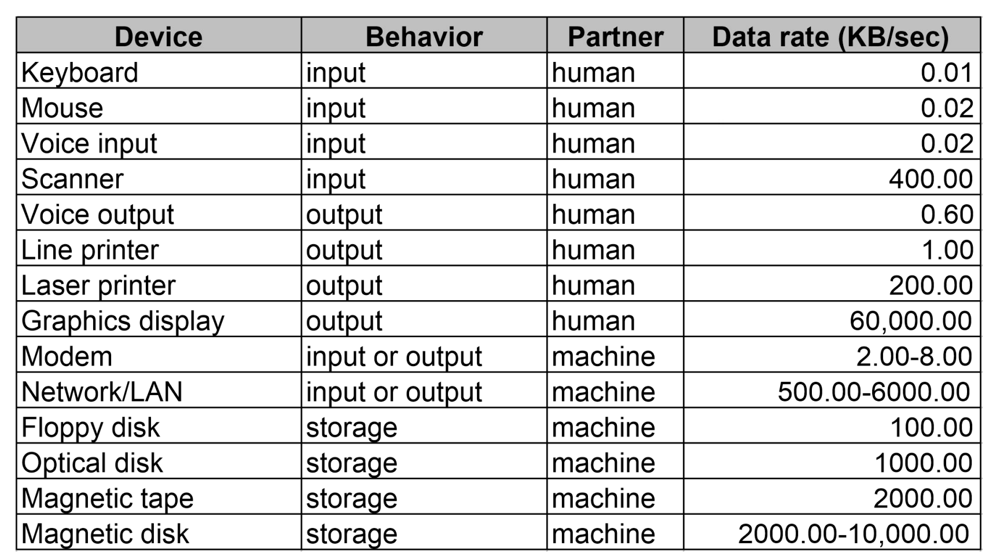
请大家仔细观察这张表。从键盘的0.01 KB/sec到高速网络和磁盘的数千乃至上万KB/sec，数据速率的跨度高达六个数量级以上！这种巨大的差异性，给设计一个统一、高效的I/O系统带来了巨大的挑战。
1.2 I/O性能的度量：吞吐率 vs. 响应时间
评估I/O性能也比评估CPU性能复杂得多，因为它高度依赖于应用场景。主要有两个指标：
- 吞吐率 (Throughput) / 带宽 (Bandwidth)：单位时间内可以传输的数据总量。对于处理大文件、科学计算等应用至关重要。
- 响应时间 (Response Time) / 延迟 (Latency)：从发起一个I/O请求到请求完成所需的时间。对于交互式应用，如个人电脑、数据库事务处理，响应时间是用户体验的关键。
有时，我们会用IOPS (I/O Operations Per Second)来衡量性能，即每秒能完成多少次独立的I/O操作。这对于处理大量小文件的服务器（如税务系统）尤为重要。
1.3 阿姆达尔定律的警示
我们必须再次请出计算机体系结构中的“幽灵”——阿姆达尔定律 (Amdahl's Law)。它无时无刻不在提醒我们：系统的整体性能，取决于其最慢的那个组件。
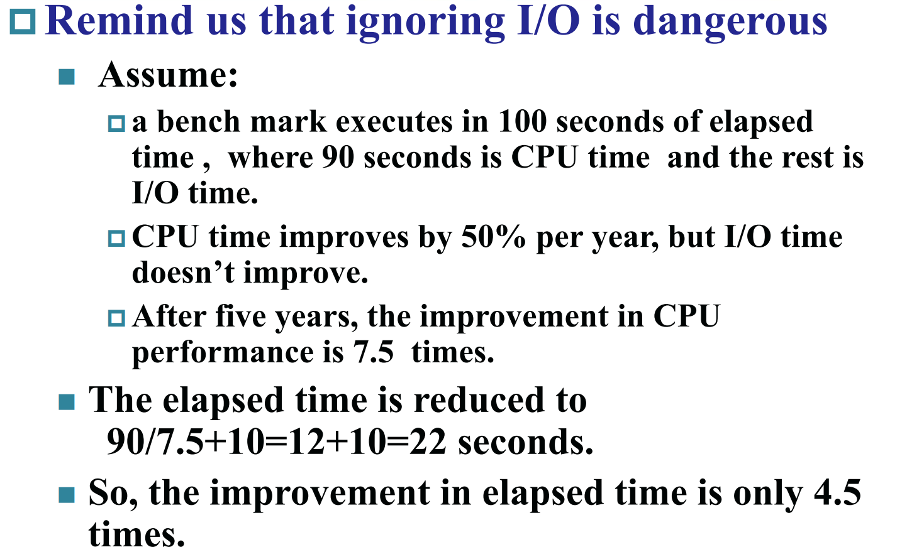
这个例子非常经典：假设一个程序运行100秒，其中CPU时间90秒，I/O时间10秒。即使我们让CPU性能在5年内提升了7.5倍（90秒 -> 12秒），但I/O时间不变。最终的总执行时间只从100秒缩短到 12 + 10 = 22 秒，整体性能只提升了约4.5倍，远低于CPU的7.5倍。
结论：忽视I/O，就是忽视系统性能的木桶短板。
第二部分：磁盘存储——数据的最终归宿
在存储器层次结构中，磁盘（特别是机械硬盘HDD）是传统的大容量、非易失性存储的基石。虽然SSD（固态硬盘）日益普及，但理解HDD的机械原理对于理解I/O性能瓶颈至关重要。
2.1 磁盘的物理结构
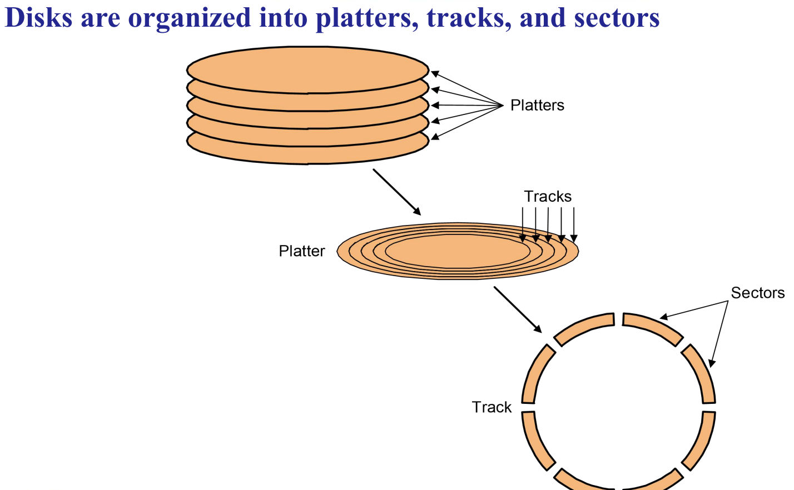 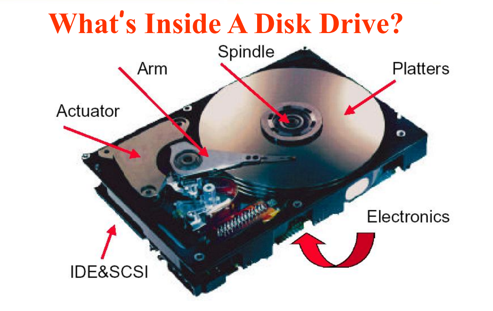
- 盘片 (Platters)：多个涂有磁性材料的金属或玻璃盘片，叠在一起高速旋转。
- 磁头 (Heads)：每个盘面对应一个读写磁头，所有磁头被固定在同一个磁头臂 (Arm) 上，同步移动。
- 磁道 (Tracks)：盘面上一圈圈的同心圆。
- 扇区 (Sectors)：每个磁道被划分成若干个扇区，是磁盘读写的最小单位（通常为512字节或4KB）。
- 柱面 (Cylinder)：所有盘面上半径相同的磁道共同组成一个虚拟的柱面。
2.2 磁盘访问时间的构成
一次磁盘访问的总时间，由三部分机械延迟和一部分电子延迟构成： $$ \text{Access Time} = \text{Seek Time} + \text{Rotational Latency} + \text{Transfer Time} + \text{Controller Overhead} $$
- 寻道时间 (Seek Time)：将磁头臂移动到目标磁道正上方所需的时间。这是最耗时的部分，平均寻道时间在3-14毫秒（ms）之间。
- 旋转延迟 (Rotational Latency)：等待磁盘盘片旋转，直到目标扇区的起始位置转到磁头下方所需的时间。平均旋转延迟是转一圈时间的一半。
- 例如，一个7200 RPM（每分钟转数）的硬盘，转一圈需要
60s / 7200 = 8.33ms。平均旋转延迟约为4.17ms。
- 例如，一个7200 RPM（每分钟转数）的硬盘，转一圈需要
- 传输时间 (Transfer Time)：磁头扫过目标扇区，完成数据读/写所需的时间。这取决于磁盘的转速和数据密度。
- 控制器开销 (Controller Overhead)：磁盘控制器处理命令所需的时间，通常较短。
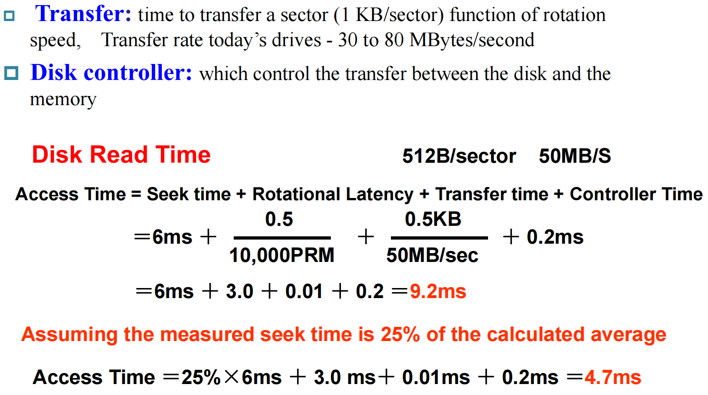
关键洞察：寻道和旋转这两个机械动作的延迟，占据了磁盘访问时间的绝大部分。一旦磁头定位完成，读取连续的多个扇区（即整个磁道）的成本，远低于读取多个分散在不同磁道的扇区。 这就是为什么对磁盘的访问要极力追求顺序性。
2.3 闪存 (Flash Storage) / 固态硬盘 (SSD)
- 本质：一种非易失性的半导体存储器，没有机械部件。
- 优势：
- 速度：比HDD快100-1000倍，因为它没有寻道和旋转延迟。
- 物理特性：更小、更省电、更抗震。
- 劣势：
- 成本：每GB成本仍高于HDD。
- 寿命：闪存单元有擦写次数限制（虽然通过磨损均衡 Wear Leveling技术可以大大延长寿命）。
- 类型：
- NOR Flash：支持随机读写，类似RAM，常用于存储固件（如BIOS）。
- NAND Flash：以块为单位进行访问，密度更高、成本更低，是SSD和U盘的主流技术。
第三部分：提高存储系统的可靠性——RAID技术
将数据全部存放在单一的磁盘上是极其危险的。磁盘是机械设备，总有损坏的一天。而当我们将多个磁盘组织起来提升性能时（例如，将文件条带化存储在多个磁盘上以实现并行读写），整个系统的可靠性会急剧下降。
- 可靠性数学：假设单个磁盘的可靠性为R，那么N个独立磁盘组成的阵列，其整体可靠性为 $R^N$。如果一个磁盘一年内不出故障的概率是99%，那么10个磁盘组成的阵列，一年内不出故障的概率就只有
0.99^10 ≈ 90.4%。 - MTTF (平均无故障时间)：N个磁盘阵列的MTTF，大约是单个磁盘MTTF的
1/N。
为了解决这个问题，RAID (Redundant Arrays of Inexpensive Disks，廉价磁盘冗余阵列) 技术应运而生。其核心思想是：通过增加冗余信息，来容忍一个或多个磁盘的物理故障。
3.1 RAID 0: 条带化 (Striping)
- 机制：将数据分成条带，交错地写入阵列中的各个磁盘。
- 优点：通过并行读写，极大地提高了大文件访问的性能（吞吐率）。
- 缺点：没有任何冗余。任何一个磁盘损坏，都会导致所有数据的丢失。因此，RAID 0的可靠性比单个磁盘还要差。它是一个纯粹的性能方案。
3.2 RAID 1: 镜像 (Mirroring)
- 机制：将每一份数据，完整地复制一份，存放在一个独立的“镜像”磁盘上。
- 优点：提供了极高的数据可靠性。只要阵列中还有一个磁盘是好的，数据就不会丢失。读性能也可以通过从两个副本中选择较快的一个来优化。
- 缺点：成本极高。存储容量的开销是100%，即一半的磁盘空间都用来存放副本。
3.3 RAID 3/4: 专用奇偶校验盘 (Dedicated Parity Disk)
思想：镜像的成本太高，我们能否用更少的冗余信息来恢复数据？答案是奇偶校验（Parity）。
机制：对于N个数据盘，额外增加一个校验盘。校验盘上每个条带的内容，是N个数据盘对应条带的**异或（XOR）**结果。
P = D0 ⊕ D1 ⊕ D2 ⊕ ...
数据恢复：当任何一个数据盘（如D1）损坏时，可以通过其他所有数据盘和校验盘，再次进行异或运算来恢复丢失的数据。
D1 = D0 ⊕ D2 ⊕ ... ⊕ P
RAID 4的瓶颈：对于小块随机写操作，每次写入一个数据块，都需要：(1) 读取旧的数据块；(2) 读取旧的校验块；(3) 计算新的校验块；(4) 写入新的数据块；(5) 写入新的校验块。所有写操作都会集中在唯一的那个校验盘上，使其成为整个阵列的性能瓶颈。
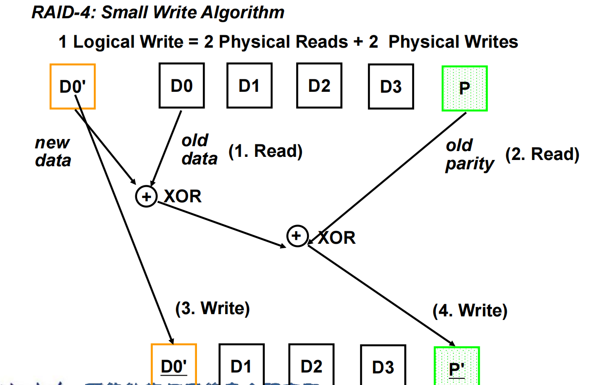
3.4 RAID 5: 分布式奇偶校验 (Distributed Parity)
- 机制：为了解决RAID 4的校验盘瓶颈问题，RAID 5将校验块交错地分布在阵列中的所有磁盘上。
- 优点：对于小块随机写，写操作可以分布到不同的磁盘上，消除了单一校验盘的瓶颈，大大提高了小块写的性能。
- 应用：RAID 5是在性能、容量和可靠性之间取得了最佳平衡的方案，是企业级存储中最广泛应用的技术之一。
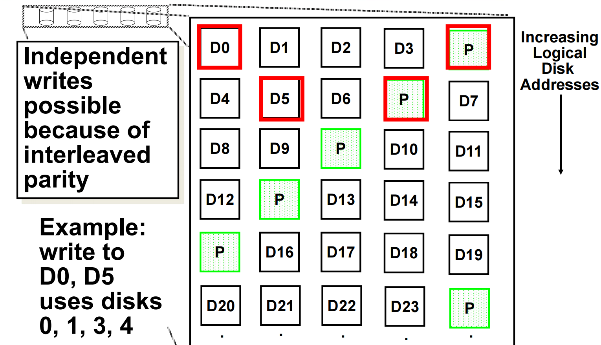
3.5 RAID 6: 双重校验 (Dual Parity)
- 机制：在RAID 5的基础上，增加第二个独立的校验块（使用不同于XOR的算法，如里德-所罗门码）。
- 优点：可以容忍任意两个磁盘同时发生故障，提供了比RAID 5更高的可靠性。
- 应用：随着磁盘容量越来越大，单盘故障后的数据重建时间（Rebuild Time）也越来越长（可能需要数小时甚至数天）。在重建期间，如果再坏一块盘，RAID 5就会崩溃。因此，对于大容量、高可靠性要求的系统，RAID 6正变得越来越流行。
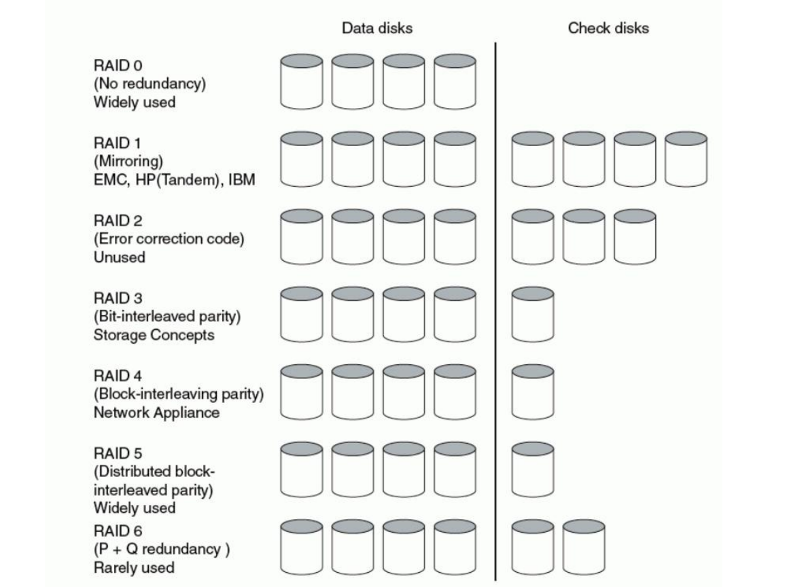
第四部分：总线”
CPU、内存、各种I/O控制器，它们之间是如何通信的？答案是通过总线（Bus）。
4.1 总线的基本概念
- 定义：一组共享的、用于连接多个子系统的电子通路。
- 组成：
- 数据线：传输实际的数据。
- 地址线：指明数据的来源或目的地。
- 控制线：传输请求、应答、时钟等控制信号。
- 挑战：作为共享资源，总线可能成为系统的瓶颈。其设计需要在带宽、延迟、成本、物理长度、可连接设备数之间进行复杂的权衡。
4.2 总线的类型
- 处理器-内存总线：短、高速、专为CPU和内存通信定制。
- I/O总线：长、标准化、需要支持速率迥异的多种设备。如PCI, PCI-Express, USB, SATA。
- 现代系统结构：通常采用分层的总线结构。高速的处理器-内存总线通过一个桥（Bridge）芯片连接到相对较慢的I/O总线。
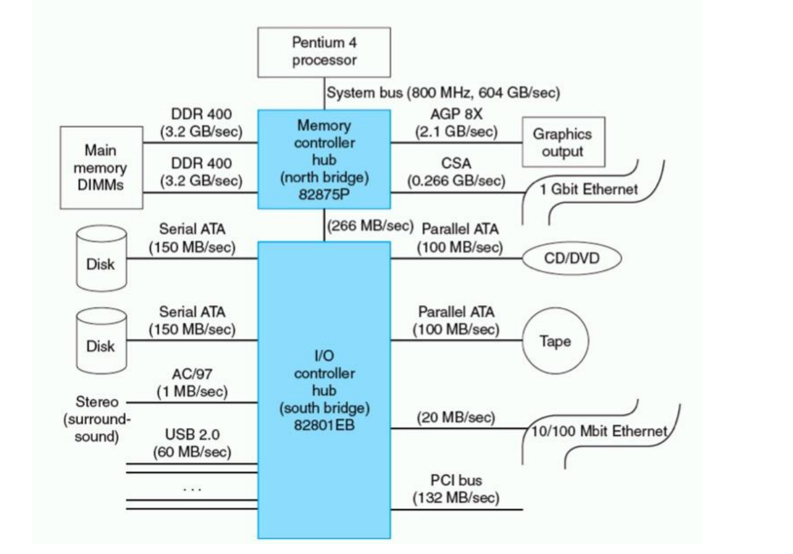
4.3 总线通信协议
- 同步总线 (Synchronous Bus)：
- 使用一个统一的时钟信号来协调所有通信。
- 协议固定、硬件简单、速度快。
- 缺点是所有设备必须工作在同一时钟频率下，且由于时钟偏移（Clock Skew）问题，总线长度受限。
- 异步总线 (Asynchronous Bus)：
- 不使用全局时钟，而是通过一套**“握手”（Handshaking）**协议来协调通信。
- 例如，主设备发出
ReadReq信号，从设备收到后处理数据，数据准备好后发出DataRdy信号，主设备收到后取走数据并发回Ack信号。 - 优点是可靠，可以连接不同速度的设备，总线长度也可以更长。缺点是每次传输都需要多次握手，开销较大。
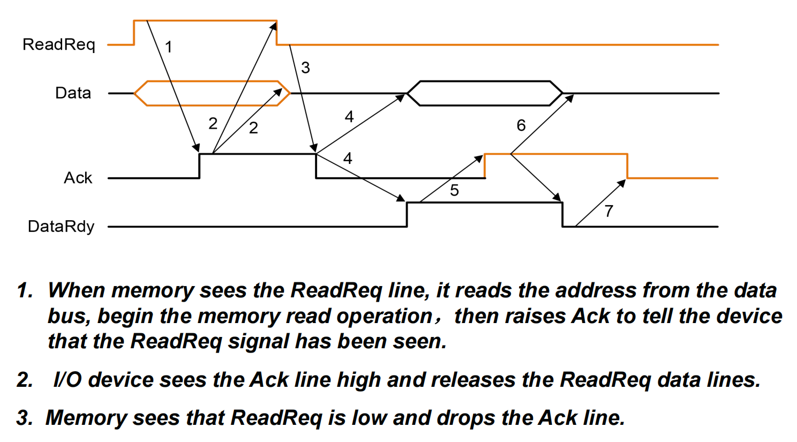 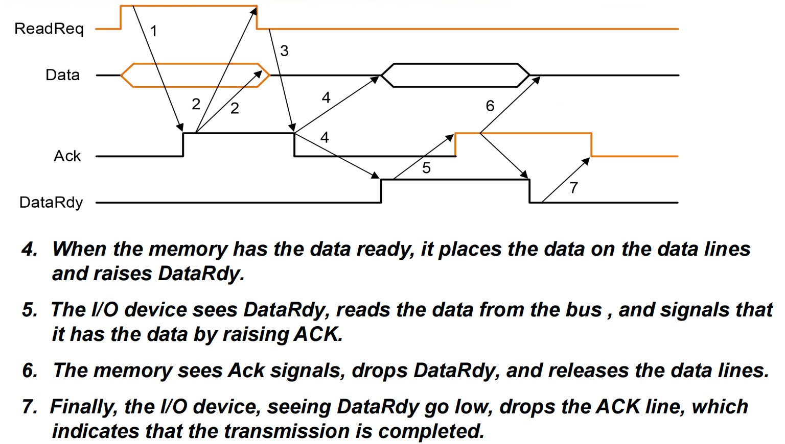
第五部分：CPU与I/O设备的交互
CPU如何与一个具体的I/O设备（如网卡）进行通信？
5.1 I/O寻址
- 内存映射I/O (Memory-Mapped I/O)：将I/O设备的控制寄存器和数据寄存器，映射到物理内存地址空间的一部分。CPU访问这些设备，就像访问普通内存一样，使用标准的
load和store指令。这是现代RISC架构的通用做法。 - 专用I/O指令：一些架构（如x86）提供专门的
in和out指令来访问一个独立的I/O地址空间。
5.2 数据传输的三种方式
-
轮询 (Polling)：
- CPU反复地、主动地去查询I/O设备的状态寄存器，看它是否已经准备好进行下一次数据传输。
- 优点：实现简单。
- 缺点：如果设备很慢，CPU将花费大量时间在空转查询上，极大地浪费了计算资源。
-
中断驱动I/O (Interrupt-Driven I/O)：
- CPU向设备发出一个命令后，就去执行其他任务。当设备完成操作或需要服务时，它会主动向CPU发送一个中断信号。
- CPU收到中断后，会暂停当前任务，保存现场，跳转到一段专门的**中断服务程序（Interrupt Service Routine, ISR）**去处理I/O事件，处理完毕后再返回原任务。
- 优点：极大地提高了CPU的利用率，实现了计算与I/O的并行。
-
直接内存访问 (Direct Memory Access, DMA)：
- 对于大块数据的传输（如磁盘文件），如果让CPU逐字逐句地通过中断来搬运，开销依然很大。
- DMA允许I/O设备控制器，在获得总线控制权后，直接在设备和主存之间传输数据，完全无需CPU的干预。
- 流程：CPU只需要告诉DMA控制器：(1)源地址 (2)目的地址 (3)传输长度 (4)传输方向。然后DMA控制器就会接管整个传输过程。传输完成后，DMA控制器再通过一次中断通知CPU。
- 优点：将CPU从繁琐的数据搬运工作中彻底解放出来，是实现高吞吐率I/O的关键。
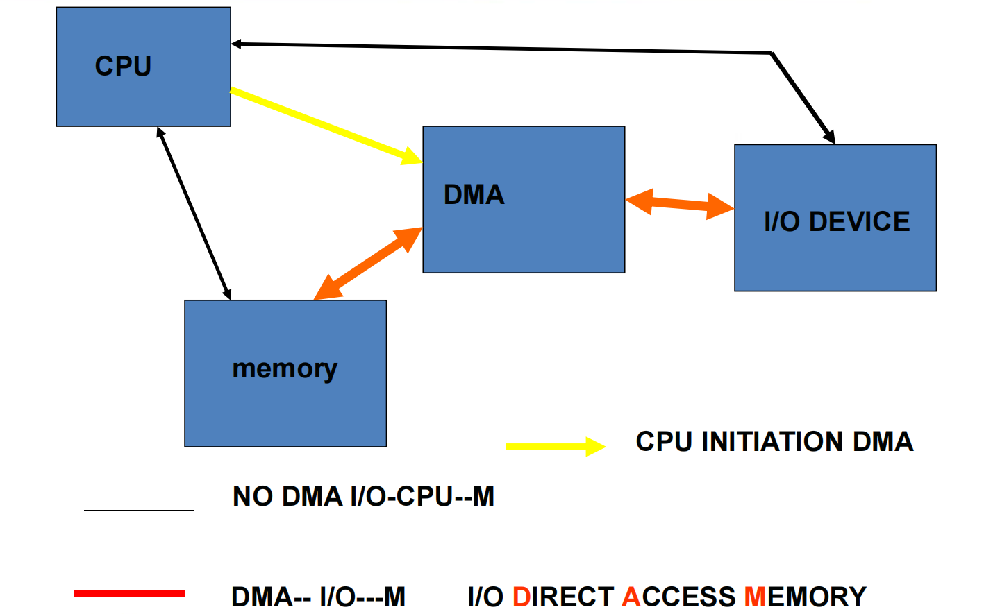
总结
今天，我们理解了：
- I/O设备的多样性是系统设计的核心挑战。
- 磁盘的机械特性决定了其性能瓶颈在于寻道和旋转。
- RAID技术通过冗余，巧妙地在性能、容量和可靠性之间取得了平衡。
- 总线是连接系统的共享通道，其设计充满了权衡。
- 中断和DMA是实现CPU与I/O设备高效并行工作的关键机制。